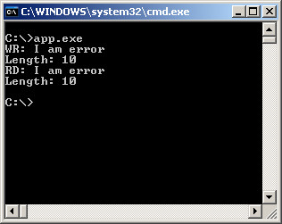
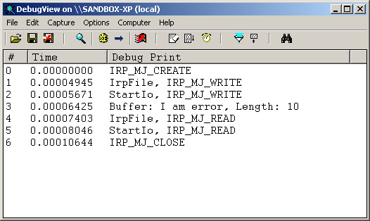

參考資訊：
https://wasm.in/
http://four-f.narod.ru/
https://github.com/steward-fu/ddk
http://www.delphibasics.info/home/delphibasicsprojects/delphidriverdevelopmentkit
main.c
#include <ntddk.h>
#define DEV_NAME L"\\Device\\MyDriver"
#define SYM_NAME L"\\DosDevices\\MyDriver"
char szBuffer[255] = { 0 };
VOID StartIo(struct _DEVICE_OBJECT *pMyDevice, struct _IRP *pIrp)
{
ULONG len = 0;
PIO_STACK_LOCATION psk = IoGetCurrentIrpStackLocation(pIrp);
switch (psk->MajorFunction) {
case IRP_MJ_READ:
len = strlen(szBuffer);
strcpy(pIrp->AssociatedIrp.SystemBuffer, szBuffer);
DbgPrint("StartIo, IRP_MJ_READ");
break;
case IRP_MJ_WRITE:
len = psk->Parameters.Write.Length;
memcpy(szBuffer, pIrp->AssociatedIrp.SystemBuffer, len);
DbgPrint("StartIo, IRP_MJ_WRITE");
DbgPrint("Buffer: %s, Length: %d", szBuffer, len);
break;
}
pIrp->IoStatus.Status = STATUS_SUCCESS;
pIrp->IoStatus.Information = len;
IoCompleteRequest(pIrp, IO_NO_INCREMENT);
IoStartNextPacket(pMyDevice, FALSE);
}
void Unload(PDRIVER_OBJECT pMyDriver)
{
UNICODE_STRING usSymboName = { 0 };
RtlInitUnicodeString(&usSymboName, L"\\DosDevices\\MyDriver");
IoDeleteSymbolicLink(&usSymboName);
IoDeleteDevice(pMyDriver->DeviceObject);
}
NTSTATUS IrpFile(PDEVICE_OBJECT pMyDevice, PIRP pIrp)
{
PIO_STACK_LOCATION psk = IoGetCurrentIrpStackLocation(pIrp);
switch (psk->MajorFunction) {
case IRP_MJ_CREATE:
DbgPrint("IRP_MJ_CREATE");
break;
case IRP_MJ_WRITE:
DbgPrint("IrpFile, IRP_MJ_WRITE");
IoMarkIrpPending(pIrp);
IoStartPacket(pMyDevice, pIrp, 0, NULL);
return STATUS_PENDING;
case IRP_MJ_READ:
DbgPrint("IrpFile, IRP_MJ_READ");
IoMarkIrpPending(pIrp);
IoStartPacket(pMyDevice, pIrp, 0, NULL);
return STATUS_PENDING;
case IRP_MJ_CLOSE:
DbgPrint("IRP_MJ_CLOSE");
break;
}
IoCompleteRequest(pIrp, IO_NO_INCREMENT);
return STATUS_SUCCESS;
}
NTSTATUS DriverEntry(PDRIVER_OBJECT pMyDriver, PUNICODE_STRING pMyRegistry)
{
PDEVICE_OBJECT pMyDevice = NULL;
UNICODE_STRING usSymboName = { 0 };
UNICODE_STRING usDeviceName = { 0 };
pMyDriver->MajorFunction[IRP_MJ_CREATE] = IrpFile;
pMyDriver->MajorFunction[IRP_MJ_WRITE] = IrpFile;
pMyDriver->MajorFunction[IRP_MJ_READ] = IrpFile;
pMyDriver->MajorFunction[IRP_MJ_CLOSE] = IrpFile;
pMyDriver->DriverStartIo = StartIo;
pMyDriver->DriverUnload = Unload;
RtlInitUnicodeString(&usDeviceName, L"\\Device\\MyDriver");
IoCreateDevice(pMyDriver, 0, &usDeviceName, FILE_DEVICE_UNKNOWN, 0, FALSE, &pMyDevice);
RtlInitUnicodeString(&usSymboName, L"\\DosDevices\\MyDriver");
IoCreateSymbolicLink(&usSymboName, &usDeviceName);
pMyDevice->Flags &= ~DO_DEVICE_INITIALIZING;
pMyDevice->Flags |= DO_BUFFERED_IO;
return STATUS_SUCCESS;
}
app.c
#include <stdio.h>
#include <stdlib.h>
#include <windows.h>
#include <winioctl.h>
#include <strsafe.h>
#include <setupapi.h>
int main(int argc, char* argv[])
{
DWORD len = 0;
DWORD dwRet = 0;
HANDLE hFile = NULL;
char szBuffer[255] = { "I am error" };
hFile = CreateFile("\\\\.\\MyDriver", GENERIC_READ | GENERIC_WRITE, 0, NULL, OPEN_EXISTING, 0, NULL);
len = strlen(szBuffer);
printf("WR: %s\n", szBuffer);
printf("Length: %d\n", len);
WriteFile(hFile, szBuffer, len, &dwRet, NULL);
memset(szBuffer, 0, sizeof(szBuffer));
ReadFile(hFile, szBuffer, sizeof(szBuffer), &dwRet, NULL);
printf("RD: %s\n", szBuffer);
printf("Length: %d\n", dwRet);
CloseHandle(hFile);
return 0;
}
完成

